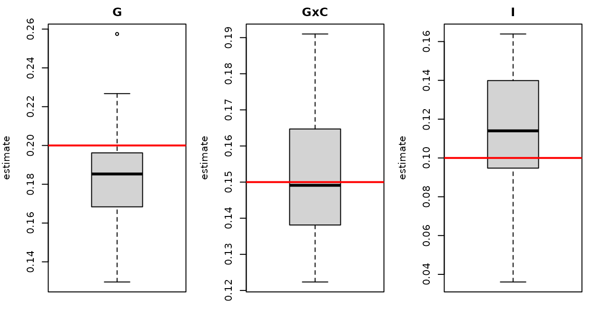

This page shows how to simulate data with known variance components
and how to check that the estimators recover them. The simulators used
for the package example data are exported: simulate_geno(),
simulate_schint() and simulate_pert().
Simulated architecture
For each gene, the cell-level generator draws
\[ y_{im}=\sqrt{h_G^2}\,\tilde g_i+\sqrt{h^2_{G\times C}}\,\tilde g'_i\,c_{im} +\sqrt{h_I^2}\,e_i+\sqrt{h_o^2}\,\tilde o_{im}+\sqrt{h_\varepsilon^2}\,\varepsilon_{im}, \]
with \(\tilde g=Xb\), \(\tilde g'=Xb'\) polygenic scores from causal SNPs (standardized to unit variance across donors), \(c_{im}\) a standard-normal cell state and the remaining effects independent. Variances sum to one.
Bias and variance across replicates
geno <- simulate_geno(400, 250, seed = 11)
spec <- list(GENE = list(g = 0.20, gxc = 0.15, i = 0.10, cov = 0.05))
reps <- 30
est <- t(sapply(seq_len(reps), function(r) {
s <- simulate_schint(geno, genes = spec, cells = c(20, 40), seed = 100 + r)
f <- schint_cell(s$cell, "GENE", "donor", geno = geno, context = "state",
covariates = c("pc1", "pc2", "age", "sex", "batch", "subtype"))
setNames(f$summary$variance[match(c("G", "GxC", "I"), f$summary$term)], c("G", "GxC", "I"))
}))
round(rbind(truth = c(G = .20, GxC = .15, I = .10), mean = colMeans(est), sd = apply(est, 2, sd)), 3)
#> G GxC I
#> truth 0.200 0.150 0.100
#> mean 0.183 0.152 0.114
#> sd 0.026 0.017 0.029
The red line is the generating value. (The realized genetic variance of a random polygenic score varies around its nominal value; in the cis window the GRM captures only part of it, so estimates scatter around, rather than exactly at, the nominal heritability.)
Calibration of the jackknife
z <- t(sapply(seq_len(20), function(r) {
s <- simulate_schint(geno, genes = list(GENE = list(g = 0.2, gxc = 0, i = 0.1, cov = 0.05)),
cells = c(20, 40), seed = 500 + r)
f <- schint_cell(s$cell, "GENE", "donor", geno = geno, context = "state", jackknife = TRUE)
f$coefficients[f$coefficients$component == "G:state", c("estimate", "se")]
}))
z <- data.frame(estimate = unlist(z[, 1]), se = unlist(z[, 2]))
c(mean_estimate = mean(z$estimate), sd_of_estimates = sd(z$estimate), mean_jackknife_se = mean(z$se))
#> mean_estimate sd_of_estimates mean_jackknife_se
#> 0.000177742 0.002692167 0.003254096With no G×Cell-State effect the average estimate is close to zero, and the average jackknife SE is of the same size as the empirical standard deviation of the estimates.
Simulating your own scenarios
sim <- simulate_schint(
geno,
genes = list(MYGENE = list(g = 0.1, gxc = 0.1, i = 0.05, cov = 0.05)), # rest is noise
n_causal = 20, cells = c(30, 60), n_celltypes = 6, seed = 1
)
sim$cell # cell-level data (one cell type)
sim$sample # donor x cell-type pseudobulk
sim$truth # generating variancesUse your own genotype matrix to retain real allele-frequency and LD structure.